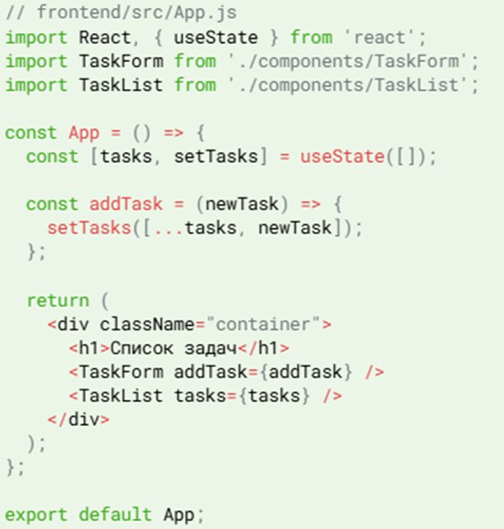
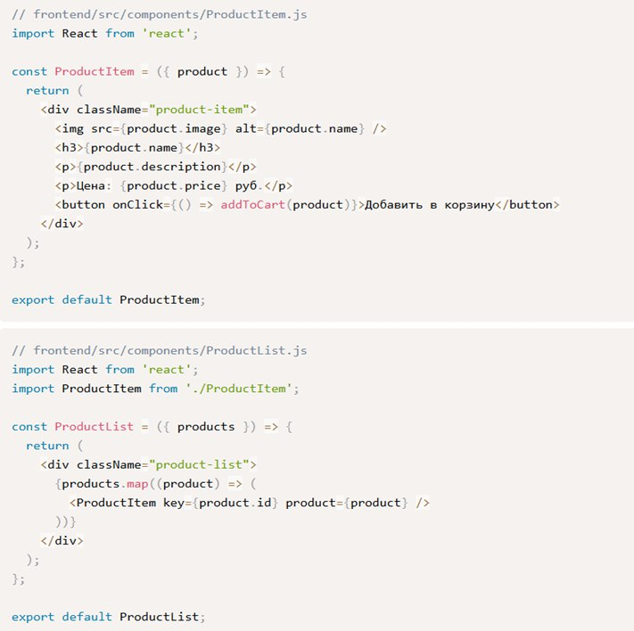

Я Веб-разработчик со стажем работы более 5 лет.
Умею работать с языками программирования Python,html и css.
Стремлюсь создавать качественный и понятный код, чтобы малоопотные программисты могли понимать код.
- Языки программирования: Python, HTML, CSS
- Фреймворки и библиотеки: React, Node.js, Express.js, React Native, Redux
- Базы данных: MySQL, MongoDB
- Инструменты разработки: Git, VS Code, Docker, Webpack
- Образование: 2003-2008г. Среднее-Профисиональное образование по специальности программист.
Сентябрь 2020г. –наст.время -веб-разработчик в сфере создания и поддержки веб-приложений. Яндекс.
Веб-приложение для управления задачами
Описание проекта: Создание веб-приложения для управления задачами, позволяющее пользователям создавать, планировать и отслеживать свои задачи.
Ваша роль: Frontend разработчик.
Технологии: React, Node.js, MongoDB.
Результаты: Разработанное приложение было запущено и успешно используется командой разработчиков.
веб-сайта для электронной коммерции
Описание проекта: Создание веб-сайта для электронной коммерции с использованием React и Node.js.
Ваша роль: Full-stack разработчик.
Технологии: React, Node.js, MySQL.
Результаты: Проект был успешно запущен и пользуется популярностью среди клиентов.
Бакулин Андрей Юрьевич
Дата рождения: 24.09.1995
Профессия: Веб-разработчик
Email: backulinandrey@gmail.com
Телефон: +79452647463